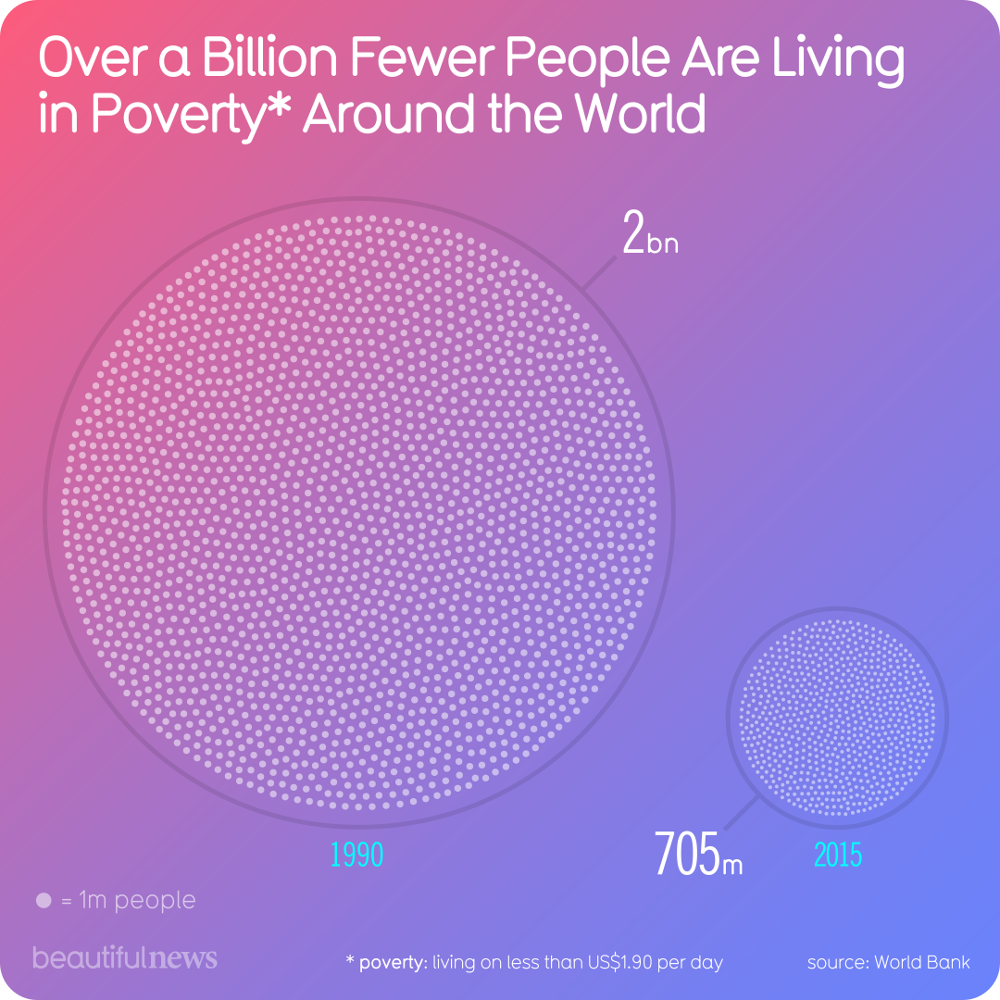
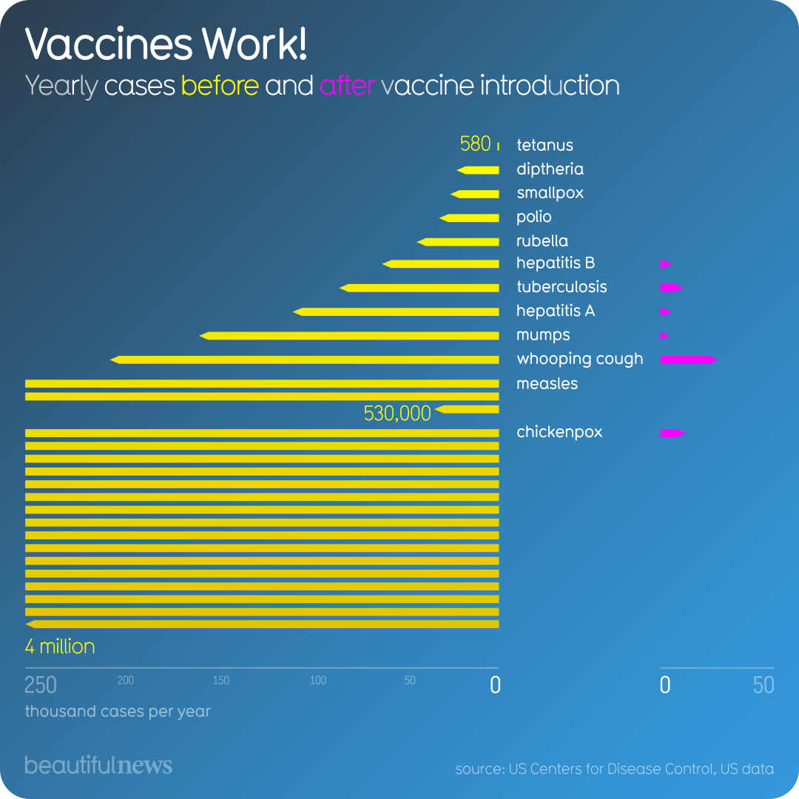
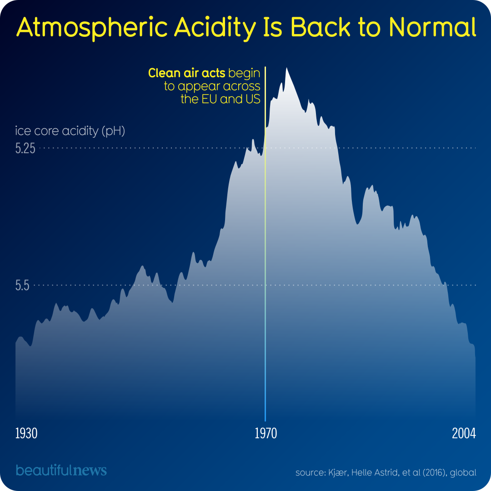
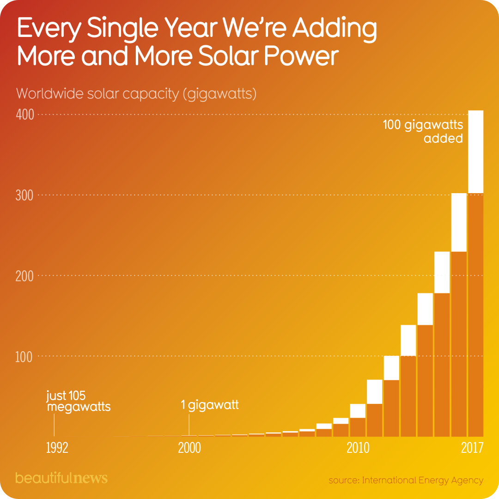

Better News
Over a Billion Fewer People Are Living in Poverty* Around The World
This radical decrease in poverty is down to better health, better education, better social policies. Better still: it's taken just one generation to achieve. Can the living conditions of the world’s poorest people be improved? Yes. Have some proof Source.
Vaccines do Work
How was smallpox eradicated? Vaccination. Why are polio and diphtheria so rare? Vaccination. How are the world’s children protected from a serious illness? Vaccination. Source.
Atmospheric Acidity Back to Normal
Atmospheric acidity is back to 1930’s levels. That means air quality is up. Clean air laws in the US and Europe have worked. It’s an amazing achievement View Source.
Solar Power is Increasing
Solar is truly becoming a mainstream source of electricity. Over 24 countries can now generate a gigawatt or more. Costs are falling. Demand is rising. The transition is beginning View Data.